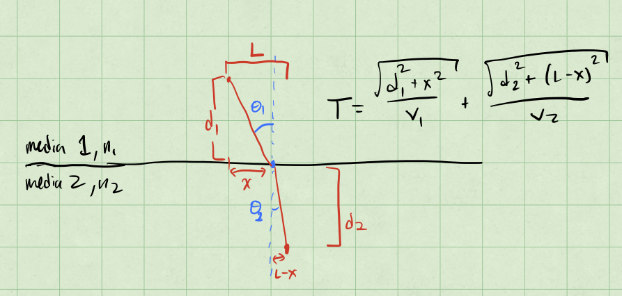
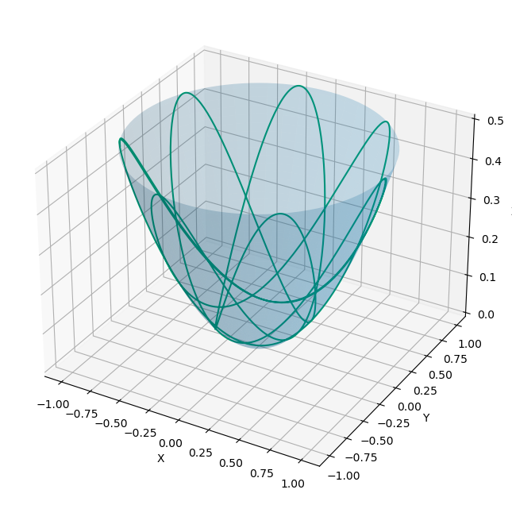

Homework 8 (Due 12 Apr)#
Solution Homework 8, Spring 2024
import numpy as np
from math import *
import matplotlib.pyplot as plt
import pandas as pd
%matplotlib inline
plt.style.use('seaborn-v0_8-colorblind')
Exercise 1 (10pt) Paths along a curved surface#
We have shown by minimizing the path length on a 2D flat surface that we have generated a linear equation, which illustrates the shortest distance between two points is a straight line. On a curved surface, the shortest distance will be a curve of some kind. In the exercise you will be asked to show that the shortest distance between two points on a sphere and a cylinder, both of fixed radii.
A step in spherical coordinates is given by:
A step in cylindrical coordinates is given by:
(5 pt) Demonstrate the integral for the shortest distance between two points on a sphere of radius \(R\) is given by:
where \(\theta\) is the polar angle and \(\phi\) is the azimuthal angle. Note that you want to travel from (\(\theta_1, \phi_1\)) to (\(\theta_2, \phi_2\)) at fixed \(R\).
Solution
We start with the distance element \(ds\) in spherical coordinates and note that we are fixed at \(R\): This means that \(dr = 0\). We can then write the distance element as:
The length of that step is:
because the directions are orthogonal; just like in Cartesian coordinates.
We can reduce simplify this by dividing reverse distributing the \(R^2\) and \(d\theta^2\):
Taking the square root of this gives us the length of the step:
The total length of the path is then the integral of this over the path:
(5 pt) Construct the integral for the shortest distance between two points on a cylinder of radius \(R\) and height \(h\). The coordinates are \((R, \phi_1, z_1)\) and \((R, \phi_2, z_2)\) in the cylindrical coordinate system, where \(\rho\) is the radial difference, \(\phi\) is the azimuthal angle, and \(z\) is the height.
Solution
This solution is very similar to the one above. Now the distance element is:
where we have already set \(d\rho = 0\) because we are fixed at \(R\). The length of this step is:
We choose to solve this in terms of an integral over \(\phi\) (you could also choose \(z\)). We reverse distribute the \(R^2\) and \(d\phi^2\):
So that the length of the step is:
And thus the integral for the total length of the path is:
If we had chosen to solve this in terms of \(z\) instead, we would have reverse distributed the \(dz^2\):
Thus the length of the step would have been:
And the integral for the total length of the path would have been:
Exercise 2 (15pt) Snell’s Law#
We can develop Snell’s Law by minimizing the time it takes for light to travel between two points in different media. We note that the speed of light in a media is given by \(v = c/n\), where \(c\) is the speed of light in a vacuum and \(n\) is the refractive index of the media. The time it takes for light to travel between two points is given by \(t = L/v\), where \(L\) is the distance between the two points.
Let a light ray travel in a medium with refractive index \(n_1\) into another medium with refractive index \(n_2\).
(5 pt) Sketch the problem and indicate the relevant angles and distances in your figure. Recall that the angle of incidence is \(\theta_1\) and the angle of refraction is \(\theta_2\). It is ok to use a 2D sketch.

(5 pt) Set up the “integral” for the time it takes for light to travel between two points in different media. Use the fact that the speed of light in a media is given by \(v = c/n\). Your answer needs to include the angles \(\theta_1\) and \(\theta_2\) and the refractive indices \(n_1\) and \(n_2\).
Solution
From the picture above, we can see that the distance that light travels in the first media is given by:
and in the second media:
So we can write the total time it takes for light to travel between the two points as:
where the the speed of light in a media is given by \(v = c/n\). This is the “integral” we are looking for. Note that it depends on the location where the light enters the second media, \(x\). This is the variable we want to minimize with respect to.
(5 pt) Minimize the time it takes for light to travel between two points in different media to derive Snell’s Law.
Solution
To find the minimum of this “integral”, we take it’s derivative and set it equal to zero:
Taking the derivative of \(T(x)\) gives us:
Interestingly, the angles that we defined in the picture in part 1 are the same as the ratios in the equation above.
So we can rewrite the equation above as:
or, equivalently:
Exercise 3 (15pt) Lagrangian Examples#
Constructing the Lagrangian for a system can be a bit tricky. In this exercise you will be asked to construct the Lagrangian for a few systems and quickly find equations of motion to illustrate the process.
(2 pt) Construct the Lagrangian in 3D for a projectile subject to no air resistance in a uniform gravitational field. The coordinates are \((x, y, z)\) in the Cartesian coordinate system. Find the 3 equations of motion.
Solution
Here the kinetic energy is given by:
and the potential energy is given by:
So the Lagrangian is:
There’s three equations of motion, one for each coordinate:
Applying these equations gives:
(2 pt) Construct the Lagrangian for a one-dimensional simple harmonic oscillator (\(F=-kx\)). The coordinate is \(x\) in the Cartesian coordinate system. Find the equation of motion.
Solution
The kinetic energy is given by:
and the potential energy is given by:
So the Lagrangian is:
The equation of motion is:
Applying this equation gives:
(3 pt) A mass moves in a potential well \(U(x,y) = \frac{1}{2}k(x^2 + y^2)\). Construct the Lagrangian in 2D. The coordinates are \((x, y)\) in the Cartesian coordinate system. Find the 2 equations of motion.
Solution
The kinetic energy is given by:
and the potential energy is given by:
So the Lagrangian is:
There’s two equations of motion, one for each coordinate:
Applying these equations gives:
This describes a 2D harmonic well.
It’s common to use coordinates that are convenient for the problem. In these cases, you will need to write down the kinetic and potential energy in terms of the coordinates you choose. The single particle kinetic energy in these coordinates are commonly used.
(4 pt) Write or derive the velocity vector in spherical coordinates. The coordinates are \((r, \theta, \phi)\) in the spherical coordinate system. Show the kinetic energy is given by \(T = \frac{1}{2}m(\dot{r}^2 + r^2\dot{\theta}^2 + r^2\sin^2\theta\dot{\phi}^2)\).
Solution
The velocity vector in spherical coordinates is:
The square of this velocity is:
because the directions are orthogonal; just like in Cartesian coordinates.
Thus, the kinetic energy is:
(4 pt) Write or derive the velocity vector in cylindrical coordinates. The coordinates are \((\rho, \phi, z)\) in the cylindrical coordinate system. Show the kinetic energy is given by \(T = \frac{1}{2}m(\dot{\rho}^2 + \rho^2\dot{\phi}^2 + \dot{z}^2)\).
Solution
The velocity vector in cylindrical coordinates is:
The square of this velocity is:
again because the directions are orthogonal.
Thus, the kinetic energy is:
Exercise 4 (25pt) Changing Coordinates#
Consider two particles with masses \(m_1=m_2=m\) connected by a spring with spring constant \(k\). They sit on a frictionless surface but are constrained to the \(x\)-axis. The location of the first particle is \(x_1\) and the location of the second particle is \(x_2\). The spring is at equilibrium when the particles are a distance \(L\) apart. Assume the spring is massless and that the left mass never changes position with the right mass (i.e., the spring is always horizontal).
(3 pt) Write down the kinetic and potential energy for this system in terms of \(x_1\) and \(x_2\) and their associated velocities.
Solution
There are two objects, so that the kinetic energy is given by:
Here we know that the relaxed length of the spring is \(L\). When the spring is stretched or compressed, it is stretched or compressed by \(x_1 - x_2 - L\). So the potential energy is:
(4 pt) Write down the Lagrangian for this system in terms of \(x_1\) and \(x_2\) and their associated velocities \(\mathcal{L}(x_1, x_2, \dot{x}_1, \dot{x}_2)\). Find the 2 equations of motion.
Solution
The Lagrangian is:
There are two equations of motion, one for each coordinate:
We take \(x_1\) first:
and
So the equation of motion for \(x_1\) is:
Now we take \(x_2\):
and
So the equation of motion for \(x_2\) is:
We ended up with two coupled equations of motion. This is a common result when we have two objects connected by a spring.
(5 pt) Now consider a new coordinate system where the center of mass is at \(x_{cm} = \frac{1}{2}(x_1 + x_2)\) and the relative coordinate is \(x = x_1 - x_2\). Write down the kinetic and potential energy in terms of \(x_{cm}\) and \(x\) and their associated velocities.
Solution
In this case, we can rewrite the kinetic energy in terms of the center of mass and relative coordinates:
Taking the time derivative of these gives us the velocities:
So now we have a prescription for the kinetic energy in terms of the center of mass and relative coordinates:
which we expand and then simplify to:
The potential energy can also be written in terms of the center of mass and relative coordinates:
so that the potential energy is:
(8 pt) Write down the Lagrangian for this system in terms of the center of mass coordinate (\(x_{cm}\)) and the spring’s extension (\(x\)) and the associated velocities \(\mathcal{L}(x_{cm}, x, \dot{x}_{cm}, \dot{x})\). Find the 2 equations of motion.
Solution
The Lagrangian is:
There are two equations of motion, one for each coordinate:
We take \(x_{cm}\) first:
and
So the equation of motion for \(x_{cm}\) is:
Now we take \(x\):
and
So the equation of motion for \(x\) is:
Thus, we have decoupled the equations of motion.
(5 pt) Find \(x_{cm}(t)\) and \(x(t)\) for the system for some generic initial conditions of your choosing. Describe the motion of the system.
Solution
The equation of motion for \(x_{cm}\) is:
So this means that the center of mass moves at a constant velocity. We can integrate this to find:
The equation of motion for \(x\) is:
This is a simple harmonic oscillator equation. We can write the solution as:
where \(\omega = \sqrt{k/m}\).
So the motion of the system is that the center of mass moves at a constant velocity, while the spring oscillates around the equilibrium position.
In this problem we are changing the coordinates to explore a different aspect of the problem (and to make the math easier). This is a common technique that will not always be obvious. But practice will help us identify when it is useful.
Exercise 5 (35 pt) Motion inside a paraboloid#
Let’s figure out the motion of a particle stuck inside a paraboloid. The potential energy of the bead is given by \(U = mgz\), where \(m\) is the mass of the bead, \(g\) is the acceleration due to gravity. The coordinates are \((x, y, z)\) in the Cartesian coordinate system.
(5 pt) Write down the Lagrangian for the system in terms of \(x\), \(y\), and \(z\) and their associated velocities \(\mathcal{L}(x, y, z, \dot{x}, \dot{y}, \dot{z})\). Find the 3 equations of motion.
Solution
We have not introduced any constraints, so the kinetic and potential energies are simply:
and
So the Lagrangian is:
There are three equations of motion, one for each coordinate:
Applying these equations gives:
This can’t be right…this is for a free particle!
(15 pt) The bead is constrained by the paraboloid \(z = \frac{1}{2}k(x^2 + y^2)\). Find the constraint equation and use it to eliminate one of the coordinates from the Lagrangian. Find the 2 equations of motion. Here it can be useful to change to cylindrical coordinates \((\rho, \phi, z)\). Hint it should be that the Lagrangian is a function of \(\rho\) and \(\phi\) and their associated velocities, \(\mathcal{L}(\rho, \dot{\rho}, \phi, \dot{\phi})\).
Solution
The issue is that we have not introduced the constraint. In cylindrical coordinates, the constraint is:
This seems like a better coordinate system to use, so we will change to cylindrical coordinates. The kinetic energy is:
and the potential energy is:
The constraint equation gives a velocity constraint:
So the Lagrangian is:
There are two equations of motion, one for each coordinate:
We take \(\rho\) first:
which gives:
The partial derivative with respect to \(\rho\) is:
So the equation of motion for \(\rho\) is:
Now we take \(\phi\):
which gives:
The partial derivative with respect to \(\phi\) is:
So the equation of motion for \(\phi\) is:
We end up with two coupled equations and nonlinear equations of motion as long as we solve away from \(\rho=0\). This is a difficult problem to solve analytically.
One thing to note is that the second equation is actually a statement of conservation of angular momentum. Angular momentum is conserved in this system.
We can see that with the generic momentum result:
where \(L_z\) is the angular momentum in the \(z\)-direction. This is a common result when we have a system with rotational symmetry.
(15 pt) For an initial condition where the bead is moving relative to the parabolic at some height above the bottom of the paraboloid, numerically solve the equations of motion (i.e., for \(\rho(t)\) and \(\phi(t)\)) and plot the the motion of the bead. Does it stick to the paraboloid?
This solution is based on one developed by Alia and Addy.
# Equations of Motion
def bead_eom_cyl(y, t):
rho, dot_rho, phi, dot_phi = y # Note there's no phi in the EOM, but we need it for the ICs and solution
dd_rho = (rho * dot_phi**2 - k**2 * rho * dot_rho**2 - g * k * rho) / (1 + k**2 * rho**2)
dd_phi = -2 * dot_rho * dot_phi / rho
return np.array([dot_rho, dd_rho, dot_phi, dd_phi])
def rk2_step(y, t, dt):
k1 = bead_eom_cyl(y, t)
k2 = bead_eom_cyl(y + 0.5 * k1 * dt, t + 0.5 * dt)
return y + k2 * dt
# Constants and parameters
k = 1.0
m = 1.0
g = 9.81
T = 10.0
dt = 0.01
steps = int(T / dt)
t = np.linspace(0, T, steps)
# Initial conditions: [rho, dot_rho, phi, dot_phi]
y = np.zeros((steps, 4))
y[0] = [1.0, 0.0, 0.0, 1.0] # rho=1, dot_rho=0, phi=0, dot_phi=1
# Run the integration
for i in range(steps - 1):
y[i + 1] = rk2_step(y[i], t[i], dt)
# Extracting the trajectory
rho = y[:, 0]
phi = y[:, 2]
z = 0.5 * k * rho**2 # z coordinate from the constraint equation
# Converting to Cartesian coordinates for plotting
x = rho * np.cos(phi)
y = rho * np.sin(phi)
## Adding a transparent paraboloid to the plot
# Generating the paraboloid surface
rho_vals = np.linspace(0, max(rho), 100)
phi_vals = np.linspace(0, 2*np.pi, 100)
Rho, Phi = np.meshgrid(rho_vals, phi_vals)
X = Rho * np.cos(Phi)
Y = Rho * np.sin(Phi)
Z = 0.5 * k * Rho**2
fig = plt.figure(figsize=(10, 8))
ax = fig.add_subplot(111, projection='3d')
ax.plot_surface(X, Y, Z, alpha=0.2) # alpha controls transparency
ax.plot(x, y, z, label='Bead Trajectory')
ax.set_xlabel('X')
ax.set_ylabel('Y')
ax.set_zlabel('Z')
Text(0.5, 0, 'Z')

Extra Credit - Integrating Classwork With Research#
This opportunity will allow you to earn up to 5 extra credit points on a Homework per week. These points can push you above 100% or help make up for missed exercises. In order to earn all points you must:
Attend an MSU research talk (recommended research oriented Clubs is provided below)
Summarize the talk using at least 150 words
Turn in the summary along with your Homework.
Approved talks: Talks given by researchers through the following clubs:
Research and Idea Sharing Enterprise (RAISE): Meets Wednesday Nights Society for Physics Students (SPS): Meets Monday Nights
Astronomy Club: Meets Monday Nights
Facility For Rare Isotope Beam (FRIB) Seminars: Occur multiple times a week